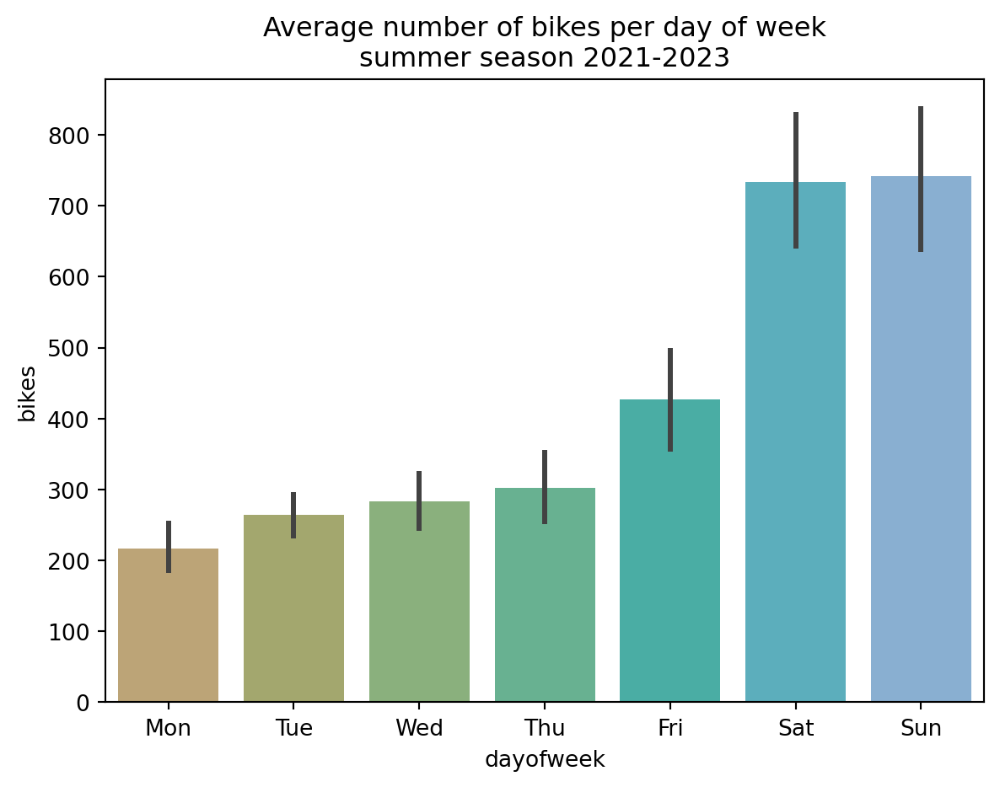

colorspace: A Python Toolbox for Manipulating and Assessing Colors and Palettes
The colorspace package provides a broad toolbox for selecting individual colors or color palettes, manipulating colors, and employing them in various kinds of visualizations.
At the core of the package is a class which allows to draw and transform colors in different color spaces (as the package name conveys). Thus, the package helps to map various three-dimensional representations of color to each other. A particularly important mapping is the one from the perceptually-based and device-independent color model HCL (Hue-Chroma-Luminance) to standard Red-Green-Blue (sRGB) which is the basis for color specifications in many systems based on the corresponding hex codes (e.g., in HTML but also in R). For completeness further standard color models are included as well in the package: polarLUV (=HCL), CIELUV, polarLAB, CIELAB, CIEXYZ, RGB, sRGB, HLS, HSV.
The HCL space (= polar coordinates in CIELUV) is particularly useful for specifying individual colors and color palettes as its three axes match those of the human visual system very well: Hue (= type of color, dominant wavelength), chroma (= colorfulness), luminance (= brightness).
from colorspace import palette, sequential_hcl, swatchplotH = palette(sequential_hcl(h = [0, 300], c = [60, 60], l =65).colors(5), "Hue")C = palette(sequential_hcl(h =0, c = [0, 100], l =65).colors(5), "Chroma")L = palette(sequential_hcl(h =0, c =0, l = [90, 25]).colors(5), "Luminance")swatchplot([H, C, L], figsize = (5, 1.5));
The colorspace package provides three types of palettes based on the HCL model:
Qualitative: Designed for coding categorical information, i.e., where no particular ordering of categories is available and every color should receive the same perceptual weight. Class: qualitative_hcl.
Sequential: Designed for coding ordered/numeric information, i.e., where colors go from high to low (or vice versa). Class: sequential_hcl.
Diverging: Designed for coding ordered/numeric information around a central neutral value, i.e., where colors diverge from neutral to two extremes. Class: diverging_hcl.
To aid choice and application of these palettes there are: scales for use with matplotlib and an app for interactive exploration; visualizations of palette properties; accompanying manipulation utilities (like desaturation, lighten/darken, and emulation of color vision deficiencies).
More detailed overviews and examples are provided in the articles:
The installation of the latest release can be done using pip. Will automatically install the necessary requirement (numpy). To use the full functionality of the package, matplotlib and imageio will be needed to be installed, though not required for visualization and CVD emulation. Check out the Installation page for more details.
The colorspace package ships with a wide range of predefined color palettes, specified through suitable trajectories in the HCL (Hue-Chroma-Luminance) color space. A quick overview can be gained easily with the hcl_palettes function:
from colorspace import hcl_paletteshcl_palettes(plot =True, figsize = (15, 10));
A suitable palette object can be easily computed by specifying the desired palette name (see the plot above), e.g.,
from colorspace import qualitative_hclpal = qualitative_hcl("Dark 3")pal(4) # Draw list of 4 colors across the palette
['#E16A86', '#909800', '#00AD9A', '#9183E6']
The functions sequential_hcland diverging_hcl work analogously. Additionally, their hue/chroma/luminance parameters can be modified, thus allowing for easy customization of each palette. Moreover, choose_palette provides a convenient user interfaces to perform palette customization interactively. Finally, even more flexible diverging HCL palettes are provided by divergingx_hcl.
Use with matplotlib, seaborn, and plotly graphics
The HCL-based color palettes can be integrated into commonly used Python packages for plotting such as seaborn, plotly, and matplotlib. For the latter all palettes come with a cmap() method to generate objects of class LinearSegmentedColormap as used by by matplotlib, making it straight forward to be used with most matplotlib plotting functions.
Below, one example on how to use colors based on the colorspace package with matplotlib, seaborn, and plotly. Several additional examples can be found on the dedicated articles:
The following figure shows a two-dimensional histogram (joint density) of the daily minimum and maximum temperature observed at a weather station in the Harz region in Germany using the “HarzTraffic” data set. The custom HCL-based palette is provided as ‘cmap’ (a LinearSegmentedColormap) using the .cmap() method.
Whilst the left supblot uses the sequential HCL-based color palette “ag_Sunset” (reversed), the right plot shows the same data using the “Blues 2” palette.
from colorspace import sequential_hcl, datasetimport matplotlib.pyplot as plt# Loading datadf = dataset("HarzTraffic")# Creating new figurefig, (ax1, ax2) = plt.subplots(1, 2, figsize = (10, 5))ax1.hist2d(df.tempmin, df.tempmax, bins =20, cmap = sequential_hcl("ag_Sunset", rev =True).cmap())ax2.hist2d(df.tempmin, df.tempmax, bins =20, cmap = sequential_hcl("Blues 2").cmap())# Setting title and labelsax1.set_title("Joint density daily min/max temperature")ax1.set_xlabel("minimum temperature [deg C]")ax1.set_ylabel("maximum temperature [deg C]")ax2.set_title("Joint density daily min/max temperature")ax2.set_xlabel("minimum temperature [deg C]")plt.show()
Seaborn
To demonstrate the use of HCL-based colormaps with seaborn, the barplot below shows the average number of bikes per day of week (with error bars) during summer seasons (June, July, August) 2021 to 2023.
from colorspace import qualitative_hcl, datasetimport matplotlib.pyplot as pltimport seaborn as sns# Loading data setdf = dataset("HarzTraffic")df = df.loc[(df.season =="summer"), :]sns.barplot(x ="dayofweek", y ="bikes", hue ="dow", data = df, order = ["Mon", "Tue", "Wed", "Thu", "Fri", "Sat", "Sun"], legend =False, palette = qualitative_hcl("Harmonic").colors(7))plt.title("Average number of bikes per day of week\nsummer season 2021-2023")plt.show()

Plotly
Finally, an example using the plotly graphics library is shown. The interactive plot below shows the daily mean temperature plotted against the day of year (Julian day) for the three consecutive years 2021, 2022, and 2023 using colors from the (slightly adjusted) diverging HCL-based color palette “Blue-Red”.
from colorspace import diverging_hcl, datasetimport plotly.express as pximport pandas as pddf = dataset("HarzTraffic")df["year"] = pd.DatetimeIndex(df.date).year# Picking three colors from (adjusted) diverging color mapcols = diverging_hcl("Blue-Red", l2 =60).colors(3)# Plottingfig = px.line(df, x ="yday", y ="temp", color ="year", title ="Daily mean temperature<br>Sonnenberg, Harz, Germany", color_discrete_sequence = cols, template ="plotly_white", labels = {"yday": "day of year", "temp": "temperature [deg C]"})fig.show()
Palette visualization and assessment
The colorspace package also provides a number of functions that aid visualization and assessment of its palettes. The demoplot function provides a series of generic/basic plot types as used by the interactive interface (choose_palette which can also be used in-line to test color palettes.
In addition, specplot allows to visualize and graphically assess the spectrum of a series of colors in the RGB and HCL spectrum, whilst hclplot converts the colors of a palette to the corresponding hue/chroma/luminance coordinates and displays them in HCL space with one dimension collapsed. The collapsed dimension is the luminance for qualitative palettes and the hue for sequential/diverging palettes.